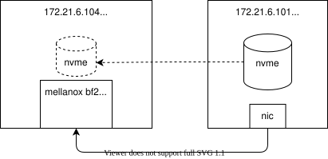

mellanox bf2 网卡激活snap功能， 配置nvme over fabrics 支持
本文讲述，如果使用mellanox bf2网卡，配置snap，挂载远端的nvme设备给宿主机使用，达到nvme over fabric的目的。
我们的实验环境，是2台物理机，宿主机都装的rocky linux 8.5，其中一个物理机上有nvme设备，另外一个物理机上有bf2网卡。
以下是实验架构：

安装实验环境
首先，我们需要给bf2刷上mellanox官方的doca bfb image，可以简单的理解是刷网卡固件，参考这里的文档做。
接下来，我们给nvme设备主机，配置nvme over fabric的能力。
# on 101
# config nvme storage server side
# https://access.redhat.com/documentation/zh-cn/red_hat_enterprise_linux/8/html/managing_storage_devices/overview-of-nvme-over-fabric-devicesmanaging-storage-devices
nmcli con modify enp5s0f1 ipv4.method manual ipv4.addresses 192.168.99.21/24
nmcli con up enp5s0f1
yum install -y nvmetcli
cd /data/down/
# wget http://git.infradead.org/users/hch/nvmetcli.git/blob_plain/0a6b088db2dc2e5de11e6f23f1e890e4b54fee64:/rdma.json
cat << EOF > /data/down/rdma.json
{
"hosts": [
{
"nqn": "hostnqn"
}
],
"ports": [
{
"addr": {
"adrfam": "ipv4",
"traddr": "192.168.99.21",
"treq": "not specified",
"trsvcid": "4420",
"trtype": "rdma"
},
"portid": 2,
"referrals": [],
"subsystems": [
"testnqn"
]
}
],
"subsystems": [
{
"allowed_hosts": [],
"attr": {
"allow_any_host": "1"
},
"namespaces": [
{
"device": {
"nguid": "ef90689c-6c46-d44c-89c1-4067801309a8",
"path": "/dev/nvme0n1"
},
"enable": 1,
"nsid": 1
}
],
"nqn": "testnqn"
}
]
}
EOF
modprobe nvmet-rdma
nvmetcli restore /data/down/rdma.json
dmesg
# ........
# [32664.912901] nvmet: adding nsid 1 to subsystem testnqn
# [32664.914013] nvmet_rdma: enabling port 2 (192.168.99.21:4420)
# to clear config / 清空配置
nvmetcli clear
nvme list
# Node SN Model Namespace Usage Format FW Rev
# --------------------- -------------------- ---------------------------------------- --------- -------------------------- ---------------- --------
# /dev/nvme0n1 CVCQ726600A0400AGN INTEL SSDPEDMW400G4 1 400.09 GB / 400.09 GB 512 B + 0 B 8EV10171
# 测试一下
yum install nvme-cli
modprobe nvme-rdma
nvme discover -t rdma -a 192.168.99.21 -s 4420
# Discovery Log Number of Records 1, Generation counter 2
# =====Discovery Log Entry 0======
# trtype: rdma
# adrfam: ipv4
# subtype: nvme subsystem
# treq: not specified, sq flow control disable supported
# portid: 2
# trsvcid: 4420
# subnqn: testnqn
# traddr: 192.168.99.21
# rdma_prtype: not specified
# rdma_qptype: connected
# rdma_cms: rdma-cm
# rdma_pkey: 0x0000接下来，我们在bf2上，做一些配置
# on 104 bf2
# 查看一下基本信息
ovs-vsctl show
# 04d25b73-2f63-4e47-b7d9-2362cc4d7fda
# Bridge ovsbr2
# Port p1
# Interface p1
# Port en3f1pf1sf0
# Interface en3f1pf1sf0
# Port ovsbr2
# Interface ovsbr2
# type: internal
# Port pf1hpf
# Interface pf1hpf
# Bridge ovsbr1
# Port en3f0pf0sf0
# Interface en3f0pf0sf0
# Port pf0hpf
# Interface pf0hpf
# Port p0
# Interface p0
# Port ovsbr1
# Interface ovsbr1
# type: internal
# ovs_version: "2.15.1"
# nmcli con modify enp3s0f0s0 ipv4.method manual ipv4.addresses 192.168.99.11/24
# nmcli con up enp3s0f0s0
# ip addr add 192.168.99.11/24 dev enp3s0f0s0
# ip addr del 192.168.99.11/24 dev enp3s0f0s0
# 给一个sf端口，配置ip地址，这样bf2就能连接到远端nvme服务
cat << EOF > /etc/netplan/70-wzh-mlnx.yaml
network:
ethernets:
enp3s0f0s0:
addresses:
- 192.168.99.11/24
dhcp4: false
renderer: NetworkManager
version: 2
EOF
# 配置bf2参数
mlxconfig -y -d /dev/mst/mt41686_pciconf0 s \
PF_BAR2_ENABLE=0 \
PER_PF_NUM_SF=1
mlxconfig -y -d /dev/mst/mt41686_pciconf0 s \
PCI_SWITCH_EMULATION_ENABLE=1 \
PCI_SWITCH_EMULATION_NUM_PORT=16 \
VIRTIO_NET_EMULATION_ENABLE=1 \
VIRTIO_NET_EMULATION_NUM_VF=0 \
VIRTIO_NET_EMULATION_NUM_PF=0 \
VIRTIO_NET_EMULATION_NUM_MSIX=16 \
ECPF_ESWITCH_MANAGER=1 \
ECPF_PAGE_SUPPLIER=1 \
SRIOV_EN=0 \
PF_SF_BAR_SIZE=8 \
PF_TOTAL_SF=64
mlxconfig -y -d /dev/mst/mt41686_pciconf0.1 s \
PF_SF_BAR_SIZE=10 \
PF_TOTAL_SF=64
mlxconfig -y -d /dev/mst/mt41686_pciconf0 s \
VIRTIO_BLK_EMULATION_ENABLE=1 \
VIRTIO_BLK_EMULATION_NUM_PF=0 \
VIRTIO_BLK_EMULATION_NUM_VF=0 \
VIRTIO_BLK_EMULATION_NUM_MSIX=16 \
EXP_ROM_VIRTIO_BLK_UEFI_x86_ENABLE=0
# 清空原来的snap配置
# 系统默认会创建一个demo的nvme设备，我们为了更清晰的做实验，就清空默认的配置
/bin/cp -f /etc/mlnx_snap/snap_rpc_init_bf2.conf /etc/mlnx_snap/snap_rpc_init_bf2.conf.wzh
/bin/cp -f /etc/mlnx_snap/spdk_rpc_init.conf /etc/mlnx_snap/spdk_rpc_init.conf.wzh
echo "" > /etc/mlnx_snap/snap_rpc_init_bf2.conf
echo "" > /etc/mlnx_snap/spdk_rpc_init.conf
# remember to COLD reboot
poweroff
# on bf2
# 重启以后，我们手动设置snap服务，深入的理解一下spdk, snap
# set the snap step by step
snap_rpc.py subsystem_nvme_create Mellanox_NVMe_SNAP "Mellanox NVMe SNAP Controller"
# {
# "nqn": "nqn.2021-06.mlnx.snap:8b82f658f138ceaf83e3bfc261a7fb14:0",
# "subsys_id": 0
# }
snap_rpc.py controller_nvme_create mlx5_0 --subsys_id 0 --pf_id 0
# {
# "name": "NvmeEmu0pf0",
# "cntlid": 0,
# "version": "1.3.0",
# "offload": false,
# "mempool": false,
# "max_nsid": 1024,
# "max_namespaces": 1024
# }
spdk_rpc.py bdev_nvme_attach_controller -b Nvme0 -t rdma -a 192.168.99.21 -f ipv4 -s 4420 -n testnqn
# Nvme0n1
snap_rpc.py controller_nvme_namespace_attach -c NvmeEmu0pf0 spdk Nvme0n1 1
snap_rpc.py emulation_device_attach --num_msix 8 mlx5_0 virtio_blk
# {
# "emulation_manager": "mlx5_0",
# "emulation_type": "virtio_blk",
# "pci_type": "physical function",
# "pci_index": 0
# }
snap_rpc.py controller_virtio_blk_create mlx5_0 --bdev_type spdk --bdev Nvme0n1 --pf_id 0 --num_queues 7
# VblkEmu0pf0
# 配置好了，我们检查一下状态
# check status
snap_rpc.py controller_nvme_namespace_list -n nqn.2021-06.mlnx.snap:8b82f658f138ceaf83e3bfc261a7fb14:0 -i 0
# {
# "name": "NvmeEmu0pf0",
# "cntlid": 0,
# "Namespaces": [
# {
# "nsid": 1,
# "bdev": "Nvme0n1",
# "bdev_type": "spdk",
# "qn": "",
# "protocol": "",
# "snap-direct": true
# }
# ]
# }
snap_rpc.py emulation_managers_list
# [
# {
# "emulation_manager": "mlx5_0",
# "hotplug_support": true,
# "supported_types": [
# "nvme",
# "virtio_blk",
# "virtio_net"
# ]
# }
# ]
spdk_rpc.py bdev_nvme_get_controllers
# [
# {
# "name": "Nvme0",
# "trid": {
# "trtype": "RDMA",
# "adrfam": "IPv4",
# "traddr": "192.168.99.21",
# "trsvcid": "4420",
# "subnqn": "testnqn"
# }
# }
# ]
snap_rpc.py controller_list
# [
# {
# "mempool": false,
# "name": "VblkEmu0pf0",
# "emulation_manager": "mlx5_0",
# "type": "virtio_blk",
# "pci_index": 0,
# "pci_bdf": "07:00.0"
# },
# {
# "subnqn": "nqn.2021-06.mlnx.snap:8b82f658f138ceaf83e3bfc261a7fb14:0",
# "cntlid": 0,
# "version": "1.3.0",
# "offload": false,
# "mempool": false,
# "max_nsid": 1024,
# "max_namespaces": 1024,
# "name": "NvmeEmu0pf0",
# "emulation_manager": "mlx5_0",
# "type": "nvme",
# "pci_index": 0,
# "pci_bdf": "06:00.2"
# }
# ]测试
# on 101, rocky linux
lsblk
# NAME MAJ:MIN RM SIZE RO TYPE MOUNTPOINT
# sda 8:0 0 278.9G 0 disk
# ├─sda1 8:1 0 1G 0 part /boot
# └─sda2 8:2 0 277.9G 0 part
# └─rl_lab101-root 253:0 0 277.9G 0 lvm /
# sr0 11:0 1 1024M 0 rom
# nvme0n1 259:0 0 372.6G 0 disk
# └─nvme-data 253:1 0 372.6G 0 lvm
# on 104 host, rocky linux
# before snap setting
lsblk
# NAME MAJ:MIN RM SIZE RO TYPE MOUNTPOINT
# sda 8:0 0 278.9G 0 disk
# ├─sda1 8:1 0 600M 0 part /boot/efi
# ├─sda2 8:2 0 1G 0 part /boot
# └─sda3 8:3 0 277.3G 0 part
# └─rl_panlab104-root 253:0 0 277.3G 0 lvm /
# after snap setting
lsblk
# NAME MAJ:MIN RM SIZE RO TYPE MOUNTPOINT
# sda 8:0 0 278.9G 0 disk
# ├─sda1 8:1 0 600M 0 part /boot/efi
# ├─sda2 8:2 0 1G 0 part /boot
# └─sda3 8:3 0 277.3G 0 part
# └─rl_panlab104-root 253:0 0 277.3G 0 lvm /
# vda 252:0 0 372.6G 0 disk
# └─nvme-data 253:1 0 372.6G 0 lvm
mount /dev/mapper/nvme-data /mnt
ls /mnt
# bgp-router.qcow2 ocp4-master-0.qcow2 ocp4-windows.qcow2持久化配置
我们刚才的配置，是实验性质的，一步一步手工做的，把这些配置固定下来，这么做。
# on 104, bf2
cat << EOF > snap_rpc_init_bf2.conf
subsystem_nvme_create Mellanox_NVMe_SNAP "Mellanox NVMe SNAP Controller"
controller_nvme_create mlx5_0 --subsys_id 0 --pf_id 0
controller_nvme_namespace_attach -c NvmeEmu0pf0 spdk Nvme0n1 1
emulation_device_attach --num_msix 8 mlx5_0 virtio_blk
controller_virtio_blk_create mlx5_0 --bdev_type spdk --bdev Nvme0n1 --pf_id 0 --num_queues 7
EOF
cat << EOF > spdk_rpc_init.conf
bdev_nvme_attach_controller -b Nvme0 -t rdma -a 192.168.99.21 -f ipv4 -s 4420 -n testnqn
EOF
# cold reboot
poweroff